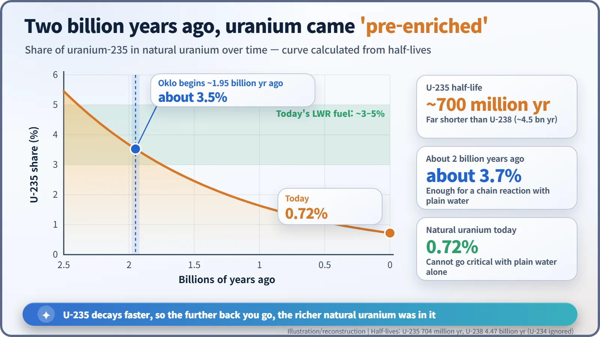
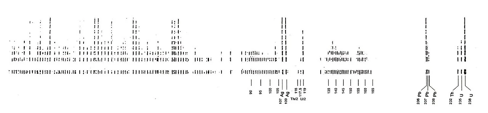
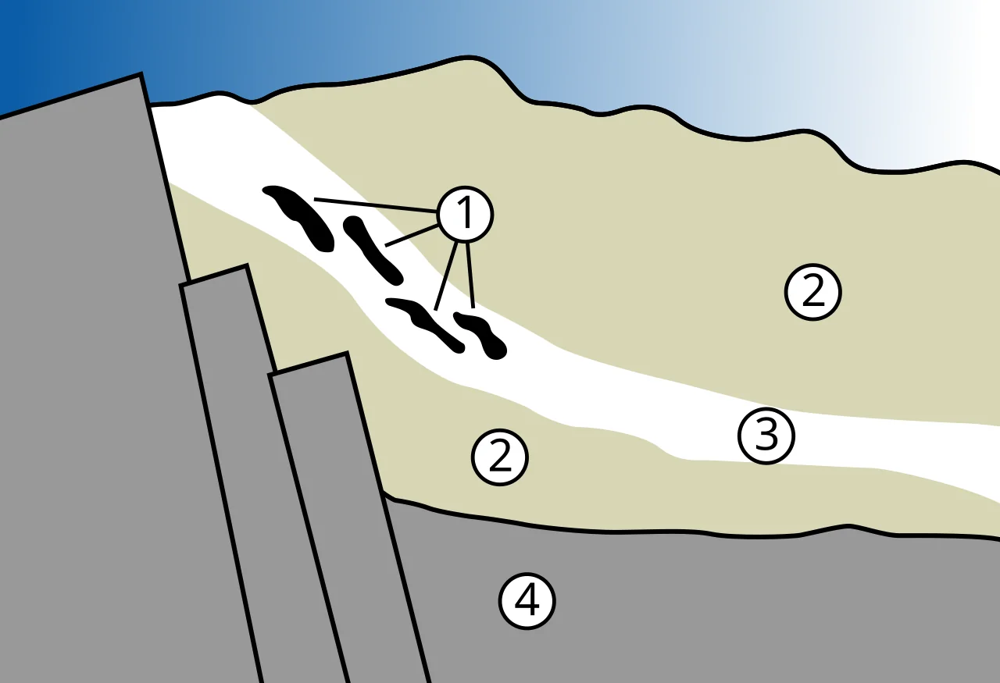
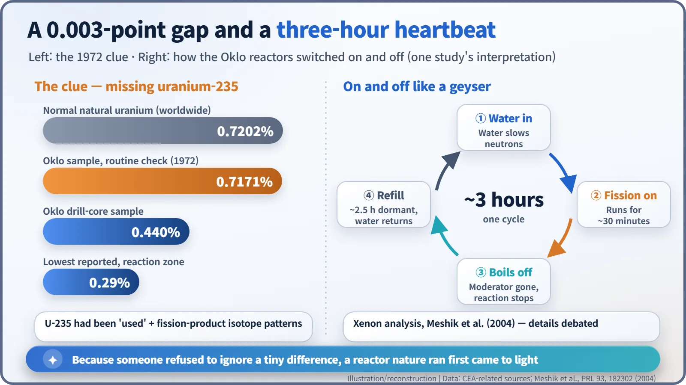

Nuclear History · 215
Nature Did It First — How a 0.003-Point Clue Revealed the Oklo Natural Reactors (1972)
A tiny shortfall of uranium-235 confirmed a 1956 prediction: nature ran fission reactors long before people did.
In 1972 a routine check at France's Atomic Energy Commission found uranium from the Oklo mine in Gabon carrying 0.7171% uranium-235 instead of the usual 0.7202%. The missing fraction had been burned in natural nuclear reactors that ran, on and off, about two billion years ago, just as Paul Kuroda had predicted in 1956.
A two-page prediction
In 1956 Paul Kazuo Kuroda (1917–2001), a chemist at the University of Arkansas, published a note of barely two pages in the Journal of Chemical Physics. Its title was modest: "On the Nuclear Physical Stability of the Uranium Minerals". Its idea was not. If groundwater had once soaked into a rich uranium deposit far back in Earth's history, Kuroda argued, a nuclear chain reaction might have started on its own, with no human hand involved. Nobody had seen any trace of such a thing. It took sixteen years, and one very small number, to show he was right. [5]
Why uranium's "spark" fades
Natural uranium is mostly uranium-238. The isotope that splits easily, uranium-235, makes up only 0.72% of it. That share is almost exactly the same wherever uranium is mined, so people who handle uranium treat it as something close to a constant.
The two isotopes age at different rates, though. Uranium-235 has a half-life of about 700 million years; uranium-238, about 4.5 billion. Run the clock backwards and the further you go, the richer uranium becomes in uranium-235. Around two billion years ago the share was above 3.5%, roughly what modern light-water reactors (reactors cooled and moderated by ordinary water) use after deliberate enrichment in a factory. Today's natural uranium cannot keep a chain reaction going with ordinary water alone. Two billion years ago, Kuroda reasoned, it could have.

Summer 1972: 0.0031 percentage points missing
In 1972 analysts at France's Atomic Energy Commission (CEA) were doing what they always did: checking the isotopic make-up of uranium bound for the enrichment plant. A batch from the Oklo mine in Gabon, in west-central Africa, came out at 0.7171% uranium-235 instead of the standard 0.7202%. The gap was 0.0031 percentage points. As a later note by a CEA retirees' association put it (translated from French): "The difference is small but significant." Repeat measurements ruled out an error. [1]
Accounts differ on exactly when and where the anomaly was first noticed. Some place it at the Pierrelatte enrichment site in May or June; others say the analysis laboratory at Cadarache, headed by Michèle Neuilly, confirmed it on 7 July. [6]

The culprit: fuel that had already burned
Removing uranium-235 from uranium takes plants as large as the ones that enrich it. A mine does not do that by itself. That left one explanation: something had already "burned" the uranium-235. Tracing the odd ore back through the supply chain led to the northern end of the Oklo mine, where one drill core held only 0.440% uranium-235. [1]
The decisive evidence came from the other elements left behind. Isotopes of neodymium and ruthenium appeared in proportions quite unlike those found in nature, and matched instead what fission produces. The fingerprints belonged to a reactor. On 25 September 1972 the physicist Francis Perrin (1901–1992), a former head of the CEA, presented two notes to the French Academy of Sciences announcing the conclusion: about two billion years ago, a nuclear chain reaction had run here by itself. [6]

Water was the switch
Later work found 17 reaction zones: 16 at Oklo and one at Bangombé, about 30 kilometres away. French researchers date the start to about 1.95 billion years ago, though some sources say 1.7 billion. The reactions switched on and off over hundreds of thousands of years, and the average thermal power probably never exceeded 100 kilowatts. That is a gentle simmer compared with a power plant, but it went on for a very long time. [2] [6]
Water worked as the switch. When groundwater filled the ore, it slowed neutrons down enough for fission to continue. As heat built up, the water boiled away and the reaction stopped. Once the rock cooled and water seeped back, it started again. In 2004 a team led by Alex Meshik at Washington University in St. Louis analysed xenon trapped in minerals and proposed a cycle of about 30 minutes on and about 2.5 hours off. That timing is one study's interpretation, and its details are still debated. [3] [4]

A two-billion-year natural laboratory
In June 1975 the International Atomic Energy Agency held a symposium on "the Oklo phenomenon" in Libreville, Gabon's capital. A central question was how far the fission products had moved in two billion years. Many stayed close to where they formed, so Oklo is often cited in research on radioactive waste disposal as a "natural analogue". It is not a model repository: groundwater flowed through it, and it was an open system. What it offers is rare information about how such elements behave in nature over very long times. [1] [2]
Physicists came too. Using samarium isotopes, several studies asked whether the fine-structure constant, one of nature's basic constants, had changed over two billion years; most concluded it had not. Stories about an "ancient civilisation's reactor" surface now and then, but everything found at Oklo is explained by geology and nuclear physics.
Fission was not a human invention after all. Nature tried it first, and we only know because someone refused to shrug off a difference in the fourth decimal place.